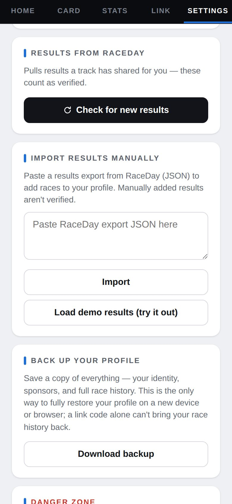
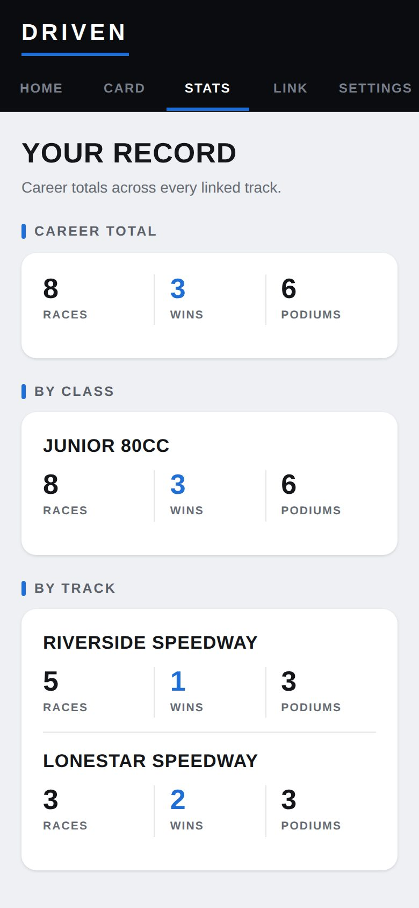

-
The track shares them
When the track archives the night, RaceDay offers to share the results with Driven. Most tracks do it right then.
-
Check for new results
In Settings, under Results from RaceDay, tap Check for new results. New finishes are added and marked as verified.

Results from RaceDay -
See them on Home
Home shows your latest result, your starts, wins, top 5s and average finish, and your recent races.

Recent races -
Your full record
The Stats tab adds it all up — career totals, by class, and by track.

Your Record -
Something wrong?
Ask the track. Results come from their scoring, so a fix there is a fix on your profile.
Good to know
- "No new results yet" just means the track hasn't shared that night — check back later.
- Settings also has a manual import for a RaceDay export file; those results stay marked unverified and don't show on your public page.
Next guides
Still stuck? The Driver FAQ covers common questions, and the Field Manual walks through every Driven screen. Or just ask.
Email a question →